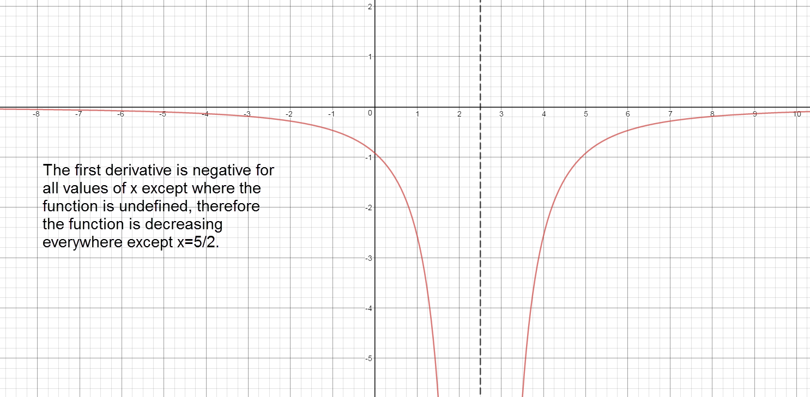
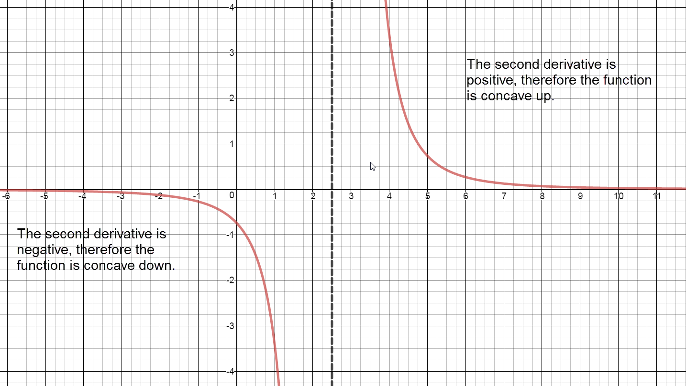
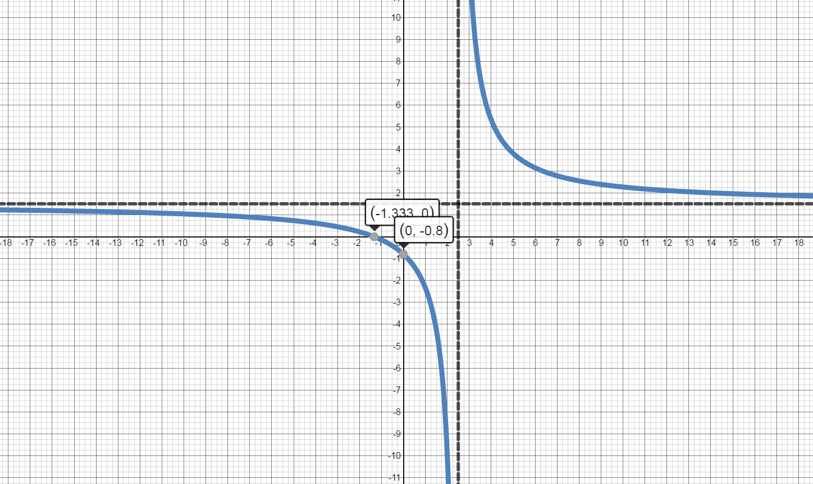
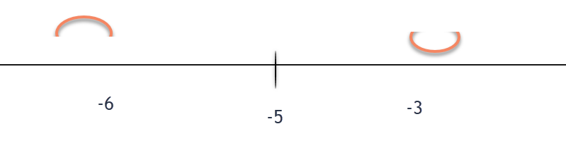
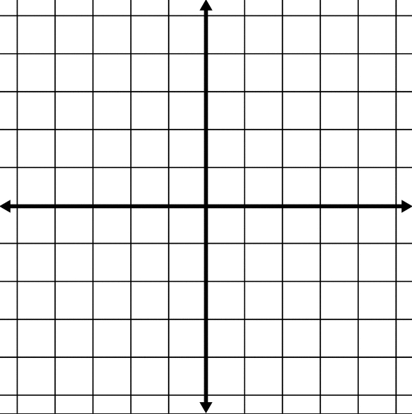
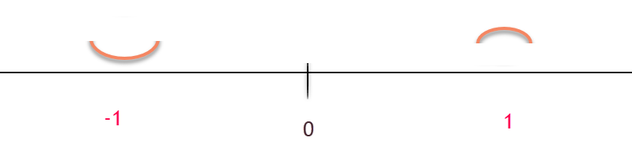

Analyze $f'(x)$ to Identify Intervals of Increase/Decrease and Extrema on the Graph of $f(x).$
Find $f'(x)$
Identify all critical numbers and partitions for the function.
Values of $x$ where$f'(x)=0$ are critical numbers.
Values of $x$ where $f'(x)$ is undefined are partitions.
Values of $x$ where $f(x)$ is undefined are partitions.
Graph the critical numbers and partitions on a number line, separating the number line into intervals.
Determine the intervals on which $f(x)$ is increasing /decreasing
Test one point contained in the interval (do not use the end points of the interval).
$f'(x)<0$ then the function $f(x)$ is DECREASING on the interval
$f'(x)>0$ then the function $f(x)$ is INCREASING on the interval
Identify local maxima and minima of $f(x)$ using the First Derivative Test.
On the interval $(a,c)$, a local maximum occurs at $f(b)$ when $f(x)$ is increasing for all $x$ in the interval $(a,b]$ and $f(x)$ is decreasing for all $x$ in the interval $[b,c)$.
On the interval $(a,c)$, a local minimum occurs at $f(b)$ when $f(x)$ is decreasing for all $x$ in the interval $(a,b]$ and $f(x)$ is increasing for all $x$ in the interval $[b,c)$.
Second Derivative Test
Analyze $f''(x)$ to Identify Intervals of Concavity and Points of Inflection on the Graph of $f(x).$
Find $f''(x).$
Find the critical numbers for the function.
Values of $x$ where $f''(x)=0$ are critical numbers.
Values of $x$ where $f''(x)$ is undefined are partitions.
Values of $x$ where $f(x)$ is undefined are partitions.
Graph the critical numbers and partitions on a number line, separating the number line into intervals.
Determine the intervals on which $f(x)$ is concave up or concave down.
Test one point contained in the interval (do not use the end points of the interval).
$f(x)$ is concave down on the interval if $f''(x)<0$.
$f(x)$ is concave up on the interval if $f''(x)>0$.
Identify inflection points of $f(x)$. A point of inflection occurs at $x=a$ when $f''(a)=0$ and $f''(x)$ changes concavity across $a$.
3.6 Video
Use the First & Second Derivative Tests to analyze the function. Identify x- & y-intercepts, any holes or asymptotes (if they exist), intervals of increase/decrease, extrema, interval of concavity, and inflection points on the graph of the function.
$-23 \neq 0$. There are no values of x where ${f}'\left( x \right)=0.$
Values of x where ${f}'\left( x \right)$ is undefined:
$2x-5=0$, $ x=\frac{5}{2}$
Values of x where $f\left( x \right)$ is undefined:
$2x-5=0$, $x=\frac{5}{2}$
Separate into intervals using: $x=\frac{5}{2}$.

Sign graph of ${f}'(x)$ reading left to right: negative, ${f}'\left( \frac{5}{2} \right)\text{= undefined}$, negative
Increasing:
The graph of the first derivative is never above the x axis. Therfore, there are no intervals where $f(x)$ is increasing.
Decreasing:
$\left( -\infty ,\frac{5}{2} \right)\cup \left( \frac{5}{2},\infty \right)$ The graph of the first derivative is always below the x axis. Therefore, the function is decreasing over the entire domain.
Local Maxima:
The first derivative never changes from positive to negative. There are no local maxima.
Local Minima:
The first derivative never changes from negative to positive. There are no local minima.
There are no values of x where ${f}''\left( x \right)=0$.
Values of x where ${f}''\left( x \right)$ is undefined:
$ 2x-5=0$
$ x=\frac{5}{2}$
Values of x where $f\left( x \right)$is undefined:
$2x-5=0$
$x=\frac{5}{2}$
Separate into intervals using: $x=\frac{5}{2}$.

Sign chart for ${f}''\left( x \right)$: negative, ${f}''\left( \frac{5}{2} \right)=$ undefined, positive
Concave up:
The graph of $f(x)$ is concave up on the interval $\left( \frac{5}{2},\infty \right).$
Concave down:
The graph of $f(x)$ is concave down on the interval $\left( -\infty ,\frac{5}{2} \right).$
Inflection Points:
Even though the function changes from concave down to concave up at $x=\frac{5}{2}$, there are no points of inflection because the function is undefined at $x=\frac{5}{2}.$

3.6 Lecture
Use the First & Second Derivative Tests to analyze the function. Identify x- & y-intercepts, any holes or asymptotes (if they exist), intervals of increase/decrease, extrema, interval of concavity, and inflection points on the graph of the function.
$39 \neq 0$. There are no values of x where ${f}'\left( x \right)=0.$
Values of x where ${f}'\left( x \right)$ is undefined:
$5x+1=0$, $ x=-\frac{1}{5}$
Values of x where $f\left( x \right)$ is undefined:
$5x+1=0$, $ x=-\frac{1}{5}$
Separate into intervals using: $x=-\frac{1}{5}$.
Sign graph of ${f}'(x)$ reading left to right: positive, ${f}'\left( -\frac{1}{5} \right)\text{= undefined}$, positive
Increasing:
$\left( -\infty ,-\frac{1}{5} \right)\cup \left( -\frac{1}{5},\infty \right)$ The graph of the first derivative is always above the x axis. Therefore, the function is increasing over the entire domain.
Decreasing:
The graph of the first derivative is always above the x axis. Therfore, there are no intervals where $f(x)$ is decreasing.
Local Maxima:
The first derivative never changes from positive to negative. There are no local maxima.
Local Minima:
The first derivative never changes from negative to positive. There are no local minima.
There are no values of x where ${f}''\left( x \right)=0$.
Values of x where ${f}''\left( x \right)$ is undefined:
$ 5x+1=0$
$ x=-\frac{1}{5}$
Values of x where $f\left( x \right)$is undefined:
$5x+1=0$
$x=-\frac15$
Separate into intervals using: $x=-\frac{1}{5}$.
Sign chart for ${f}''\left( x \right)$: positive, ${f}''\left( -\frac{1}{5} \right)=$ undefined, negative
Concave up:
The graph of $f(x)$ is concave up on the interval $\left( -\infty ,-\frac{1}{5} \right).$
Concave down:
The graph of $f(x)$ is concave down on the interval $\left( -\frac{1}{5},\infty \right).$
Inflection Points:
Even though the function changes from concave up to concave down at $x=-\frac{1}{5}$, there are no points of inflection because the function is undefined at $x=-\frac{1}{5}.$
3.6 Group Work
Use the First & Second Derivative Tests to analyze the function. Identify x- & y-intercepts, any holes or asymptotes (if they exist), intervals of increase/decrease, extrema, interval of concavity, and inflection points on the graph of the function.
There are no values of x where ${f}''\left( x \right)=0$.
Values of x where ${f}''(x)$ is undefined:
$ x+5=0$
$ x=-5$
Values of x where $f\left( x \right)$is undefined:
$x+5=0$
$x=-5$
Separate into intervals using: $x=-5$.

The graph of $f(x)$ is concave up on the interval $( -5 , \infty).$
Concave down:
The graph of $f(x)$ is concave down on the interval $( -\infty, -5).$
Inflection Points:
Even though the function changes from concave up to concave down at $x=-5$, there are no points of inflection because the function is undefined at $x=-5.$
Construct a sketch of the graph of a function of $f$ that has the given properties.
$f(x)$ is such that
$f'(5)=0$
$f'(x)< 0$ on the interval $(-\infty,5)$
$f'(x)>0$ on the interval $(5,\infty)$
$f''(x)>0$ on the interval $(-\infty,\infty)$

$f(0)=2$
$f'(-3)=0$ and $f'(4)=0$
$f'(x)<0$ on the interval $(-3,4)$
$f'(x)>0$ on the intervals $(-\infty,-3)$ and $(4,\infty)$
$f''(x)<0$ on the interval $(-\infty,0)$
$f''(x)>0$ on the interval $(0,\infty)$
$f(4)$ is undefined
$f'(4)$ is undefined
$f''(4)$ is undefined
$f(0)=0$
$f'(x)<0$ on the intervals $(-\infty,4)$ and $(4,\infty)$
$f'(x)>0$ nowhere
$f''(x)<0$ on the interval $(-\infty,4)$
$f''(x)>0$ on the interval $(4, \infty)$
3.6 Additional Practice
Use the First & Second Derivative Tests to analyze the function. Identify x- & y-intercepts, any holes or asymptotes (if they exist), intervals of increase/decrease, extrema, interval of concavity, and inflection points on the graph of the function.
Values of x where $f\left( x \right)$is undefined:
There are no values of x where $f\left( x \right)$is undefined.
Separate into intervals using: $x=0$.

Concave up:
The graph of $f(x)$ is concave up on the interval $( -\infty, 0).$
Concave down:
The graph of $f(x)$ is concave down on the interval $( 0 , \infty).$
Inflection Points:
Even though the function changes from concave up to concave down at $x=0$, there is no point of inflection because the second derivative is undefined at $x=0.$